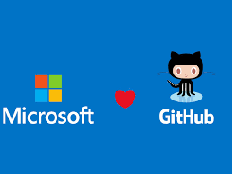
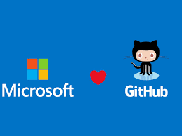

Automate your workflow from idea to production
GitHub Actions makes it easy to automate all your software workflows, now with world-class CI/CD. Build, test, and deploy your code right from GitHub. Make code reviews, branch management, and issue triaging work the way you want.
Whether you want to build a container, deploy a web service, or automate welcoming new users to your open source projects—there's an action for that. Pair GitHub Packages with Actions to simplify package management, including version updates, fast distribution with our global CDN, and dependency resolution, using your existing GITHUB_TOKEN.


 
